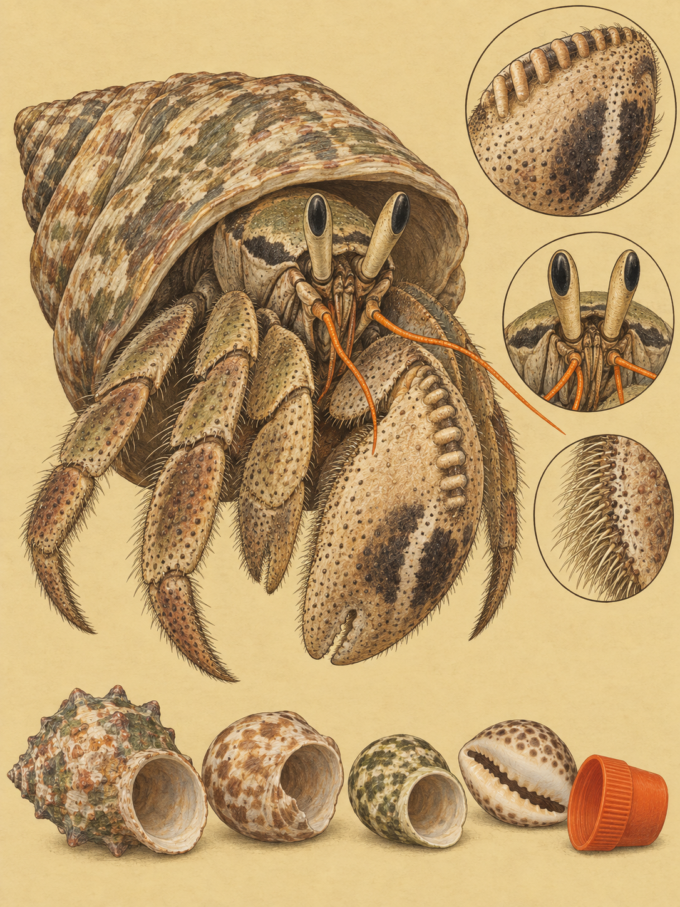

KÜSTE MOMBASA
Coenobita rugosus

Am Bamburi Beach bewegt sich ein kleiner Krebs über den Sand, das Hinterteil verborgen in einem Schneckenhaus. Sein weiches, nicht verkalktes Abdomen braucht dieses Haus als Schutz vor Fressfeinden, Verletzungen und insbesondere vor Dehydrierung. Sichtbar bleiben die langen sandfarbenen Augenstiele mit je einem dunklen Fleck, das helle orangefarbene zweite Antennenpaar und die linke Schere, die größer ist als die rechte. Auf ihrer Oberkante sitzen genau sieben leiterartige Rillen. Darunter bleibt die Handfläche beinahe glatt; außen zeigen sich meist ein oder zwei dunkle Flecken, oft durch ein weißes Band getrennt. Die Tiere werden 80 bis 120 mm lang und wiegen als Erwachsene durchschnittlich etwa 67 g. Ihre Färbung kann grün, braun, sandfarben, schwarz, weiß, rosa oder blau sein.
Der gültige wissenschaftliche Name lautet Coenobita rugosus. Die Gattung wurde 1829 von Pierre André Latreille aufgestellt. Ihr Name geht auf eine Wurzel zurück, die eine gemeinschaftliche oder klösterliche Lebensweise bezeichnet. Das passt zu einem Tier, das nicht allein nach einem Haus sucht, sondern sich in eine wartende Reihe einfügen kann. Henri Milne Edwards beschrieb die Art 1837 zunächst unter einer anderen Schreibweise. Das Artwort kommt vom lateinischen Wort für Falte, Runzel oder Riffelung und meint die auffällige Scherenhand. Weil sein Körper wächst und ein Schneckenhaus nicht mitwächst, muss er immer wieder ein größeres finden.
Ein zufällig entdecktes leeres Haus kann sofort bezogen werden. Das ist der einfache, asynchrone Tausch. Meist ist die Chance jedoch klein, genau im richtigen Augenblick eine passende Schale zu finden. Deshalb wartet der Krebs, wenn sich eine bessere Möglichkeit ankündigt. Entdeckt er ein leeres Gehäuse, verlässt er kurz sein eigenes und prüft das neue Haus mit dem Körper. Er tastet sein Innenvolumen, das Gewicht und die Öffnungsweite ab. Ist es für ihn zu groß, zieht er sich in sein altes Haus zurück, bleibt aber in der Nähe. Dieses Warten kann bis zu acht Stunden dauern. Das leere Gehäuse und seine chemischen Spuren locken weitere Krebse an. Auch sie prüfen es. Wer nicht hineinpasst, reiht sich ein. So entsteht eine Leerstandskette, eine Vacancy Chain. Die Tiere klettern dabei aufeinander oder bilden eine Kette, die nach Körpergröße geordnet ist. Das größte sitzt direkt am leeren Gehäuse, dahinter folgen kleinere Tiere. Gruppen von bis zu 20 Krebsen sind dokumentiert.
Die Kette wartet auf den passenden Körper. Kommt ein Krebs an, für den das leere Haus genau die richtige Größe hat, besetzt er es und lässt sein bisheriges, nun zu kleines Haus frei. Sofort übernimmt das zweitgrößte Tier der Reihe dieses Gehäuse. Das nächste Tier rückt nach, dann das nächste. In einer schnellen Kaskade wandern die Häuser durch die ganze Kette bis zum kleinsten Krebs. Der Vorteil liegt nicht nur darin, dass eine knappe Ressource besser verteilt wird. Der synchrone Tausch verkürzt auch die Zeit, in der ein weiches Abdomen ohne Schutz bleibt. Das senkt das Risiko, gefressen zu werden oder rasch auszutrocknen. Trotzdem bleibt der Vorgang gefährlich. Ein neues Haus kann beschädigt sein, und jeder Krebs muss seine Qualität genau einschätzen. Die Kette ist deshalb zugleich Warteschlange, Prüfstelle und Schutzmechanismus.
Das Wasser für sein Leben trägt der Krebs im Haus mit. Sein Abdomen wird von einem kleinen Wasservorrat umspült. Dieser hält die Feuchtigkeit für die Kiemenatmung aufrecht und hilft bei der Regulation des Salzhaushalts. Verliert das Tier Wasser durch Ausscheidung oder Verdunstung, muss es den Vorrat auffüllen. Dazu taucht es die Scheren in kleine Tümpel oder feuchten Sand. Dichte Haarbüschel, Setae genannt, nehmen das Wasser durch Kapillarkräfte auf. Von den Scheren wird es über die Körperoberfläche und an den Kiemen entlang in das Gehäuse geleitet. Der Vorgang läuft in Phasen ab, die durch Putzen unterbrochen werden, und kann bis zu einer Stunde dauern. Wenn es wählen kann, bevorzugt der Krebs Süßwasser. Während der Tageshitze gräbt er sich in Sand oder Detritus ein.
Nachts wandert die Art aus dem Hinterland zum Strand, um Nahrung und Wasser aufzunehmen. Tagsüber zieht sie sich in Vegetation oder Sand zurück. Auf Dünen orientiert sie sich vor allem an der Windrichtung. Ist der Horizont sichtbar, können optische Reize diese Anemotaxis überlagern. Im dichten Küstengestrüpp, wo Landmarken fehlen, nutzt der Krebs zusätzlich einen Himmelskompass. Und wenn es um ein begehrtes Schneckenhaus geht, kann man ihn sogar hören. Die Beine reiben ihre Tuberkel gegen die sieben Rillen der großen linken Schere. Es entstehen zirpende Laute, deren Schwingungen sich durch die Luft und durch den Sand ausbreiten. Vor allem bei Kämpfen um Häuser verteidigt das Tier so seinen persönlichen Raum. Die Wand des bewohnten Hauses kann dabei wie ein akustischer Verstärker wirken.
Der Riffel-Landeinsiedlerkrebs lebt nahe am Ozean, an Stränden, in Dünen und im primären Küstenwald. Andere Arten dringen weiter ins bewaldete Landesinnere vor. Zu ihnen gehören Coenobita cavipes und Coenobita brevimanus. Der Riffel-Landeinsiedlerkrebs bewohnt vor allem Schalen von Meeresschnecken wie Nerita polita oder von Landschnecken wie Achatina fulica. Der größere Coenobita brevimanus kann ihn jedoch jagen. Beobachtet wurde, wie er den kleineren Krebs mit der rechten Schere aus dem Haus zog und fraß. Nach etwa einer Stunde blieb nur die leere Schale zurück. Das Leben an Land endet außerdem jedes Mal am Meer. Die Paarung findet an Land statt, die Weibchen tragen die Eier im Gehäuse. Wenn die Embryonen entwickelt sind, wandern sie nachts zum Wasser. Dort werden die Larven häufig um den Neumond herum freigesetzt. Nach fünf Zoea-Stadien kehren die jungen Krebse am Spülsaum in winzige Schneckenhäuser zurück.
Am Strand wirkt die Schale wie ein stilles Haus. Doch sobald ein passender Leerstand auftaucht, wird daraus der Anfang einer Kette. Ein Krebs wartet, ein zweiter rückt heran, und im Sand beginnt ein ganzer Zug von Häusern, sich zu bewegen.
An der Küste von Mombasa zeigt sich die Kulturgeschichte dieses Krebses heute vor allem als Konflikt um Gehäuse. Die Sammlung mariner Schneckenhäuser durch Menschen für den Verkauf an Touristen hat die natürliche Ressource verknappt. Dadurch werden Leerstandsketten länger, Konkurrenz und Kämpfe nehmen zu. Der Reisezeitraum vom 24. September bis zum 12. Oktober fällt in den Übergang von der langen Trockenzeit zur kurzen Regenzeit. Mit mehr Niederschlag und Luftfeuchtigkeit sinkt das Austrocknungsrisiko, und die Oberflächenaktivität kann steigen.
Wo natürliche Häuser fehlen, nehmen Landeinsiedlerkrebse auch Plastik an: abgebrochene Flaschenhälse, Kosmetikdeckel oder kleine Getränkedosen. Glatte Kunststoffwände speichern den Wasservorrat schlechter und schützen weniger vor Erhitzung. Weggeworfene Flaschen werden außerdem zu Fallen. Krebse klettern hinein, finden an den glatten Wänden nicht wieder heraus und sterben. Der Verwesungsgeruch lockt weitere Tiere an. Auf den Cocos Islands verenden so Hochrechnungen zufolge jährlich über eine halbe Million Krebse. Für stark besuchte Strandabschnitte wie Bamburi Beach gilt dieser Mechanismus als bedeutender lokaler Sterbefaktor. Schwermetalle wie Cadmium und Blei aus Plastik können sich zudem in der Verdauungsdrüse anreichern. Als Aasfresser und Samenverbreiter sind die Krebse Teil des Nährstoffkreislaufs von Strand und Küstenwald.
Wo und wann: Am Bamburi Beach oder am Mtwapa Creek beobachtest du zwischen dem 24. September und dem 12. Oktober die feuchten Sandflächen in den Tagesstunden, besonders nach den ersten stärkeren Niederschlägen. Warte vibrationsarm an einem leeren Schneckenhaus, bis sich eine Leerstandskette bildet. Auch ein Krebs beim Wasserholen an feuchtem Sand lohnt das Abwarten.
Brennweite: 45 mm für die Kette aus Krebsen und Häusern in ihrem Strandhabitat. Für die Schere gehst du näher heran, ohne den Krebs aus dem Gehäuse zu drängen. Die sieben Rillen, der dunkle Fleck und die feinen Setae sollten klar voneinander getrennt bleiben.
Bild-Idee: Zeige ein leeres Gehäuse als Zentrum, davor das größte Tier und dahinter die kleiner werdende Reihe. Als zweites Bild eignet sich der Krebs mit einem Plastikdeckel als künstlichem Haus am Strand.